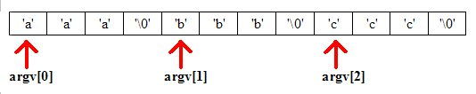
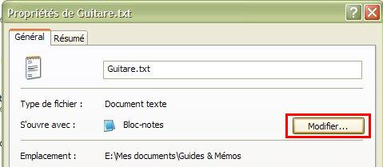
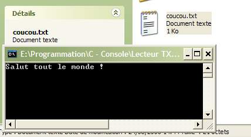
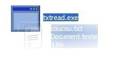
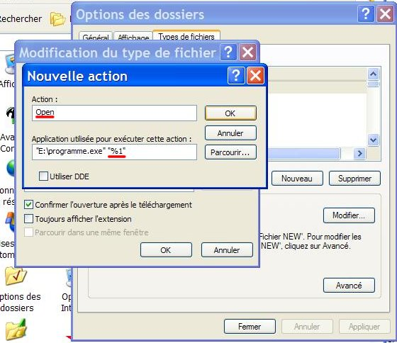

Bonjour à tous et à toutes :) . Avant toute chose, je tiens à vous dire que la lecture des deux premières parties du cours de C / C++ de m@teo21 est nécessaire à la compréhension de ce tutoriel. Plus précisément, vous devez connaître les notions suivantes en C :
fonctions
pointeurs
tableaux
ouverture de fichiers texte
Dans ce tutoriel, je vais tenter de vous expliquer l'utilité des paramètres de la fonction main en C. Vous verrez qu'ils nous permettent de faire des choses très intéressantes :p . Prêts ? On y va :) !
Avant toute chose, on va se mettre d'accord sur la syntaxe correcte à utiliser pour la fonction main que voici :
int main (int argc, char *argv[])
C'est la forme utilisée dans le cours de m@teo21 et c'est celle que j'utiliserai tout au long de ce tutorial. Maintenant, voyons ce que sont ces argc et argv.
Les paramètres : argc et argv
Le paramètre argv est en réalité un tableau de pointeurs. Chacun de ces pointeurs pointe sur des chaînes de caractères :

Note : si vous ne comprenez vraiment pas le sens de ce diagramme, je vous conseille de (re)lire le chapitre sur les chaînes de caractères et/ou celui sur les pointeurs du cours de m@teo21.
Le paramètre argc quant à lui, indique simplement le nombre de chaînes de caractères sur lequel pointe argv.
Par exemple, si argc vaut 2, cela veut dire que argv pointe sur deux chaînes de caractères, qu'on notera ainsi :
argv[0]
argv[1]
Voilà, vous savez comment ça marche :) . Et maintenant, la question qui tue...
A quoi ça sert ?
C'est ce que nous allons voir maintenant :) .
Le système d'exploitation et argv
Ces chaînes de caractères sont en réalité envoyées par votre système d'exploitation (Windows, Linux, etc...) au programme au lancement de ce dernier.
La première case de argv pointe généralement sur une chaîne de caractères qui sera le chemin de votre programme (ex : "C:/mon_super_programme/mon_super_programme.exe"), plus exactement la commande utilisée pour lancer votre programme (on y reviendra tout à l'heure, ne vous en faites pas ;) ) ; et si le chemin n'est pas disponible (sait-on jamais :p ), argv[0] doit alors pointer sur une chaîne vide.
Par ailleurs, la norme veut que argc soit strictement supérieur à 0 et elle veut enfin que argv[argc] pointe sur NULL.
Les autres cases peuvent pointer sur d'autres chaînes de caractères envoyées par le système d'exploitation qui sont généralement indiquées par l'utilisateur en ligne de commande, grâce à la console.
Note : Sous Windows et Linux, la démarche à suivre est la même hormis pour l'ouverture de la console.
Supposons que mon programme soit dans le répertoire suivant : C:\mon_super_programme\mon_super_programme.exe
Tout d'abord, ouvrez une console (Démarrer > Exécuter > tapez "cmd" sous Windows).
Ensuite, placez-vous à la racine du disque dur ou de la partition où se trouve votre programme (C: sous Windows, généralement) en tapant simplement sa lettre :
C:
Ensuite, vous devez indiquer le chemin relatif du dossier où se situe votre programme par rapport à la racine du disque sur lequel vous êtes précédé de la commande "cd") comme ceci :
cd mon_super_programme
Enfin, vous devez indiquer le nom de votre exécutable suivi des paramètres que vous voulez :
mon_super_programme.exe coucou test toto
Chaque mot après le nom du programme sera placé dans une chaîne de caractères à laquelle vous pourrez accéder grâce à argv. Ainsi, dans mon exemple, on aura :
dans argv[0] : mon_super_programme.exe (oui, souvenez-vous, je vous ai dit que par convention, le chemin du programme était indiqué dans argv[0] ;) )
dans argv[1] : coucou
dans argv[2] : test
dans argv[3] : toto
Ainsi, on pourra facilement récupérer ces arguments dans notre programme en C. C'est d'ailleurs ce qu'on va faire avec un petit exercice ;) .
Exercice d'application
Le but de cet exercice sera de vous familiariser à la gestion de argc et argv. Le principe est simple : afficher dans notre programme les arguments qui lui ont été passés par la console. Essayez de le faire vous-même puis regardez cette correction :
#include <stdio.h>
#include <stdlib.h>
int main(int argc, char *argv[])
{
int i;
for (i=0; i < argc; i++)
{
printf("Argument %ld : %s \n", i+1, argv[i]);
}
getchar();
return EXIT_SUCCESS;
}
Notez que j'indique dans printf "i+1" pour le numéro du paramètre car i commence à 0 dans ma boucle.
Une fois lancé en console en suivant la démarche de tout à l'heure, vous devriez voir quelque chose comme ça :
C:\mon_super_programme>mon_super_programme.exe coucou test toto
Argument 1 : mon_super_programme.exe
Argument 2 : coucou
Argument 3 : test
Argument 4 : toto
Pourquoi le chemin du programme est juste "console.exe" ?
En fait, c'est parce que le programme a été lancé depuis la console : comme je vous l'ai dit, argv[0] pointe en réalité sur la commande envoyée en console pour exécuter votre programme. En l'occurence, nous avons seulement tapé "mon_super_programme.exe" pour exécuter le programme donc argv[0] ne contient que "mon_super_programme.exe" :) . Cependant, lorsque votre programme est lancé à travers une interface graphique (en cliquant sur son icône), argv[0] contiendra bien le chemin entier de votre programmme, et c'est justement ce que nous allons voir maitenant ;) .
L'association de fichiers
Bon, maintenant que vous connaissez le principe, je vais vous parler d'une fonctionnalité que l'on retrouve sous plusieurs systèmes d'exploitation, j'ai nommé : L'association de fichiers.
Cette fonction vous permet d'associer un programme à un fichier de sorte que lorsque vous choisissez ce fichier, le programme approprié se lance et s'en sert. Par exemple, vos fichiers musicaux (.mp3) sont probablement associés à un lecteur (Winamp, Windows Media Player, etc...) de sorte que lorsque vous double-cliquez sur un fichier MP3, le lecteur approprié se lance et joue ce fichier.
Eh bien figurez-vous qu'en C, le chemin absolu de ce fichier sera contenu dans argv[1] :) (si aucune autre information n'est pasée à la fonction main hormis le chemin du programme).
En effet, lorsque vous associez un fichier à un programme et que vous double-cliquez sur ce fichier, votre système d'exploitation va lancer le programme en question en lui envoyant comme paramètre le chemin du fichier.
Exercice d'application
De cette façon, vous pouvez créer des applications qui gèrent l'association de fichiers, tenez par exemple, essayez de faire un programme en console qui permettrait d'afficher le contenu d'un fichier .txt qui lui serait passé en paramètre (dans argv[1] donc) :
#include <stdio.h>
#include <stdlib.h>
int main (int argc, char *argv[])
{
FILE *fichier = NULL;
char caractere;
if (argc > 1)
{
fichier = fopen (argv[1], "r"); /* On ouvre le fichier dont le chemin est accessible via argv[1] */
}
if (fichier != NULL)
{
do
{
caractere = fgetc (fichier);
printf("%c", caractere);
} while (caractere != EOF);
}
else exit(EXIT_FAILURE);
getchar();
return EXIT_SUCCESS;
}
Dans ce code, notez que la condition
if (fichier != NULL)
est d'autant plus importante que l'on ne sait pas si le chemin donné dans argv[1] est bien celui d'un fichier texte (l'utilisateur peut associer un programme au type de fichier qu'il veut). Tiens, justement, parlons-en de l'association de fichiers :
Associer un programme à un type de fichier
Sous Windows, pour associer un programme à vos fichiers .txt, compilez (sans l'exécuter) le programme que vous venez de réaliser puis faites un clic droit sur un fichier texte et allez dans "Propriétés". Dans le champ "S'ouvre avec", cliquez sur le bouton "Modifier...".

Une fenêtre s'ouvre. Cliquez sur "Parcourir" et choisissez votre programme. Cliquez alors sur OK et fermez la fenêtre des Propriétés. Désormais, lorsque vous cliquerez sur vos fichiers texte, ils s'ouvriront dans votre programme.

Remarque importante : ce procédé fonctionne également quand vous faites un glissé-déplacé d'un fichier sur l'icône de votre programme ; le chemin absolu du fichier se trouvera également dans argv[1] :) .

Plutôt sympa, non :D ?
Problème avec les arguments sous Windows Ce passage traite d'un problème qui peut arriver le plus souvent lorsque vous créez votre propre extension sous Windows et que vous envoyez en paramètre à votre programme un fichier possédant cette extension.
Il arrive dans ce cas que le chemin du fichier que vous passez en paramètre soit incomplet. Plus exactement, dès qu'un espace est présent dans son chemin (ex : C:/Mes fichiers/fichier.ext), le chemin sera alors "fragmenté" en deux morceaux à partir de l'espace : le premier morceau sera dans argv[1] et le second dans argv[2].
Pourquoi ?
Sans trop rentrer dans les détails, le problème vient du fait que l'extension du fichier que vous utilisez est mal paramétrée sous Windows. Il nous faudra donc appliquer une légère modification.
Allez dans Démarrer -> Paramètres -> Panneau de Configuration -> Options des Dossiers -> onglet "Types de Fichiers". Ici, vous aurez une liste des extensions connues par Windows. Dans cette liste, cherchez votre extension, puis cliquez sur le bouton "Avancé". Une liste d'actions devrait alors apparaître à votre écran. Choisissez "open" (action d'ouvrir le fichier en anglais) puis cliquez sur "Modifier...". Dans la nouvelle fenêtre, observez le champ "Application utilisée pour exécuter cette action". Vous devriez y voir le chemin de votre programme entre guillemets suivi d'un obscur %1.
Vous devez alors remplacer ce %1 par "%1"avec des guillemets.

De cette façon le chemin complet de votre fichier sera passé dans argv[1]. Je sais que je vous ai donné peu d'explications sur ce point mais l'on touche au système de gestion des fichiers de Windows et ce n'est pas le sujet de ce tutoriel donc je préfère ne pas m'étendre dessus :) .
Cependant, on n'en a pas fini avec l'association de fichiers : en effet, il y a un léger problème... Rien de grave, lisez plutôt :p .
Vous vous rappelez quand je vous ai dit que argv[0] contenait le chemin du programme relatif au dossier d'où vous le lanciez ? :) Eh bien, le problème avec l'association de fichier est que lorsque vous ouvrez un fichier auquel votre programme est associé, votre programme est lancé depuis le dossier où se trouve votre fichier (vous me suivez :p ?).
Prenons un exemple : Je lance un fichier toto.txt qui se trouve dans C: exte\ : le dossier de lancement de mon programme sera C: exte.
Et alors, je ne vois pas le problème ?
Le problème, c'est que si votre programme utilise des ressources comme par exemple des images qui sont stockées dans le dossier où il est installé, le chemin que vous indiquerez pour ces dernières ne sera plus valide, puisqu'il est relatif au dossier d'installation de votre programme !
Heureusement, il existe des fonctions en C pour pallier à ce problème :) .
Première fonction : getcwd
Cette fonction au nom étrange (comme beaucoup d'autres d'ailleurs :-° ) stocke dans une chaîne de caractères le dossier de lancement de votre programme. On l'utilise de cette façon :
Comme vous le voyez, le premier paramètre est la chaîne de caractères où vous voulez stocker le nom du dossier de lancement, et le second est le nombre maximal de caractères. De cette façon, vous pouvez vérifier si le dossier de lancement est bien celui où votre programme est installé. Justement, je vous propose de coder une fonction qui à ce rôle ; disons qu'elle renvoie 0 si le dossier de lancement correspond au dossier d'installation du programme et 1 si ce n'est pas le cas.
Cette fonction permet de changer le répertoire de lancement du programme durant l'exécution de celui-ci. Voici sa syntaxe :
chdir ("C:\\dossier_programme");
Elle renvoie 0 si tout s'est bien passé et -1 si une erreur est survenue. Pour pouvoir l'utiliser, il faut inclure le fichier d'en-tête unistd.h (en pratique le compilateur doit pouvoir se débrouiller tout seul, mais renverra tout de même un warning). Maintenant, je vous propose d'améliorer notre fonction pour faire en sorte qu'elle change le dossier de lancement du programme si celui-ci n'est pas le dossier d'installation du programme.
int verifier_dossier_lancement (char dossier_programme[])
{
char dossier_lancement[30];
getcwd (dossier_lancement, 30);
if (strcmp (dossier_lancement, dossier_programme) != 0)
{ /* Si le dossier de lancement est différent du dossier d'installation du programme... */
if (chdir(dossier_programme[]) == 0)
{ /* On change le répertoire de lancement et on vérifie que tout se passe bien */
return EXIT_SUCCESS;
}
else
{
return EXIT_FAILURE;
}
}
else
{
return EXIT_SUCCESS;
}
}
Et voilà :) .
Mais comment on le connaît, le chemin du programme ?
Il suffit de regarder dans argv[0], souvenez-vous ;) ! Vous aurez quelque chose comme ça : "C:\\dossier_programme\\programme.exe" - il vous suffit de faire une fonction enlevant le "programme.exe" pour récupérer le dossier d'installation de votre programme et le tour est joué :p .
Tiens...et si on la codait, cette fonction :) ?
void dossier_lancement (char chemin_programme[], char dossier[])
{
int i;
for (i= strlen(chemin_programme) ; i>0; i--)
{
if (chemin_programme[i] == '\\')
/* Lorsqu'on tombe sur le premier "\", on commence à recopier chemin_programme dans dossier */
{
dossier[i] = '\0';
i--; /* On passe au caractère précédent pour commencer à recopier le dossier de lancement */
while (i >= 0)
{
dossier[i] = chemin_programme[i];
i--;
}
}
}
}
Ici, chemin_programme est le chemin de votre programme tel qu'il est écrit dans argv[0] et dossier est la chaîne de caractères dans laquelle on va écrire le chemin du dossier de lancement.
Vous remarquerez que la fonction étudie la chaîne en partant du dernier caractère ; cela ne doit pas vous perturber : c'est le moyen le plus simple de savoir lorsqu'on atteint un dossier (indiqué par le symbole "\").
Et voilà, c'est fini. Ce n'était pas si dur après tout :p .
Et voilà, c'est fini :) . Désormais, vous pouvez faire plein de programmes intéressants avec les paramètres de la fonction main et l'association de fichiers :
Un lecteur de fichiers son avec FMOD
Une visionneuse d'images avec SDL
Un éditeur de texte avec GTK+
Et encore plein de choses...
Merci d'avoir lu ce tutoriel jusqu'au bout, j'espère que vous avez tout compris et que vous pourrez vous en servir pour faire de beaux programmes : la partie théorique n'était pas évidente, mais avouez que ça valait quand même le coup :p !
Merci à Nigel qui m'a donné le tuyau de la fonction chdir. Merci également à Darkelfe qui m'a présenté le problème avec les extensions crées sous Windows ainsi que sa solution.
Si vous avez apprécié (ou pas :D ) ce tutoriel, qu'un point vous semble obscur ou imprécis, n'hésitez pas à le signaler dans les commentaires.